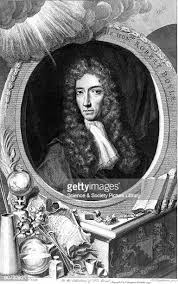
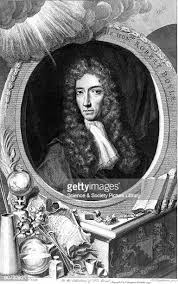
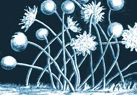
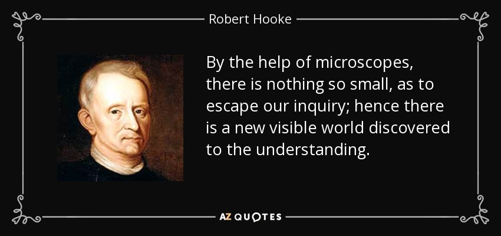

Oxford
In 1653, Hooke (who had also undertaken a course of twenty lessons on the organ) secured a chorister's place at Christ Church, Oxford.[9] He was employed as a "chemical assistant" to Dr Thomas Willis, for whom Hooke developed a great admiration. There he met thenatural philosopher
Robert Boyle
and gained employment as his assistant from about 1655 to 1662, constructing, operating, and demonstrating Boyle's "machina Boyleana" or air pump.[13] It was not until 1662 or 1663 that was awarded a Master of Arts degree.[14] In 1659 Hooke described some elements of a method of heavier-than-air flig.
Oxford
Royal Society
The Royal Society was founded in 1660, and in April 1661 the society debated a short tract on the rising of water in slender glass pipes, in which Hooke reported that the height water rose was related to the bore of the pipe (due to what is now termed capillary action). issue 6, in which he also explored the nature of "the fluidity of gravity"..to this task. On 27 June 1664 he was confirmed to the office, and on 11 January 1665 was named Curator by Office for life with an additional salary of £30 to Cutler's annuity.[c] Crafting the microworld: how Robert Hooke constructed knowledge about small things.
Abstract
Robert Hooke: Physics, Architecture, Astronomy, Paleontology, Biology Perhaps one of the greatest experimental scientists of the 17th century, Robert Hooke of Britain, left an enduring legacy in disciplines as diverse as physics,architecture, astronomy, paleontology, and biology. Modern microscopes, clocks, and automobiles all bear his imprint, and an important law of elasticity still shares his name.
.jpg) 

Introduction
Micrographia in earnest after moving to London in 1663.4 Before getting accommodation in Gresham College in the following year, where he would live for the rest of his life, he lodged with Katherine Jones, Lady Ranelagh, a her house in Pall Mall.5 This was a decade before Robert Boyle, Lady Ranelagh's brother, asked Hooke to design a laboratory for the house, and at this face"ravie"’Tis not unlikely, but that there may be yet invented several other helps for the eye, at much exceeding those already found, as those do the bare eye, such as by which we may perhaps be able to discover living Creatures in the Moon, or other Planets, the figures of the compounding Particles of matter, and the particular Schematisms and Textures of Bodies.17
Pictures: the end results
He begins a picturesque account of an observation in Micrographia with ‘Reading one day in Septemb.’102 We can imagine him, blue eyes skimming the lines of a traveller's tale as an autumn morning breezes through the window of his room in Lady Ranelagh's house.10 some more steps that Hooke took to construct the true form of the Crab-like Insect by looking at a draft inserted in a notebook belonging to John Covell
